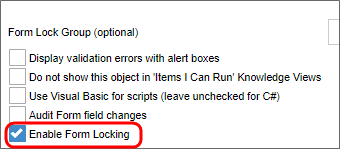

Forms can be locked by users, preventing other users from making changes to that instance of the form while the form is still locked. If a user views a form that is unlocked, but for which form locking is enabled, the form will be locked for all users except that user. The form remains locked until the user leaves the form. If another user views a locked form, all controls will appear disabled. You can display text for users viewing a locked form and optionally allow them to unlock a locked form using the Lock Form control.
To enable form locking, select the Enable Form Locking checkbox in the Options section of the Form definition's Properties tab.

Form locking can be problematic in some cases. If one user needs to review the form, without making changes, while another user in the process is trying to complete a task, the reviewer would lock the form, preventing the task assignee from completing his work. If multiple users can access the form, then the user that opens the form first will lock the others out.
For this reason, the Form definition allows you to create conditions on the Entire form is read-only when option. This option allows you to determine conditions when the form can be made read-only. This prevents editing in specified circumstances, without locking the form for all users.
 Form locking works only for authenticated users. Anonymous users cannot lock a form.
Form locking works only for authenticated users. Anonymous users cannot lock a form.